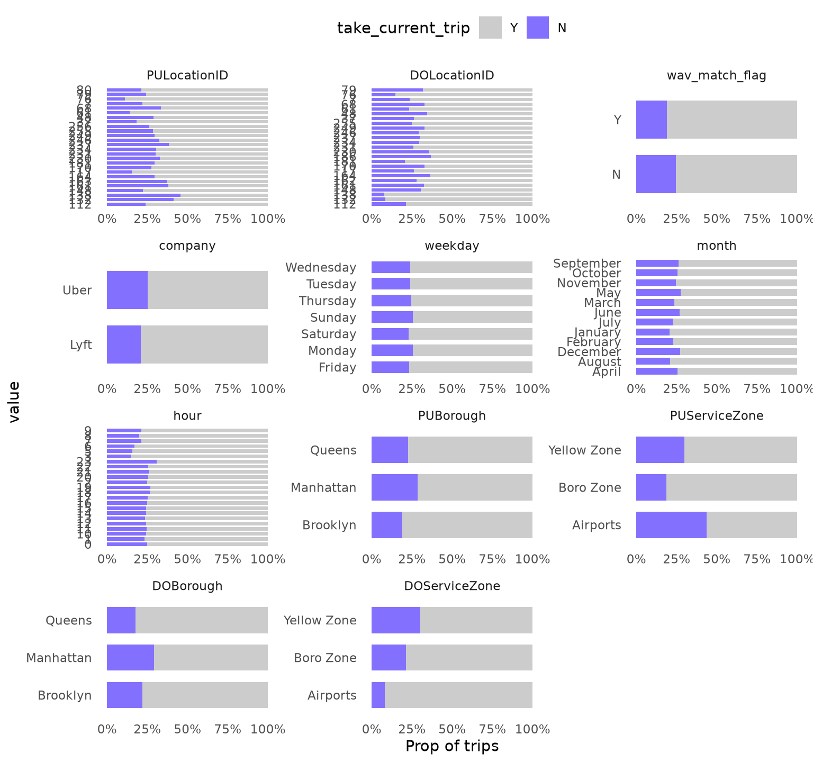
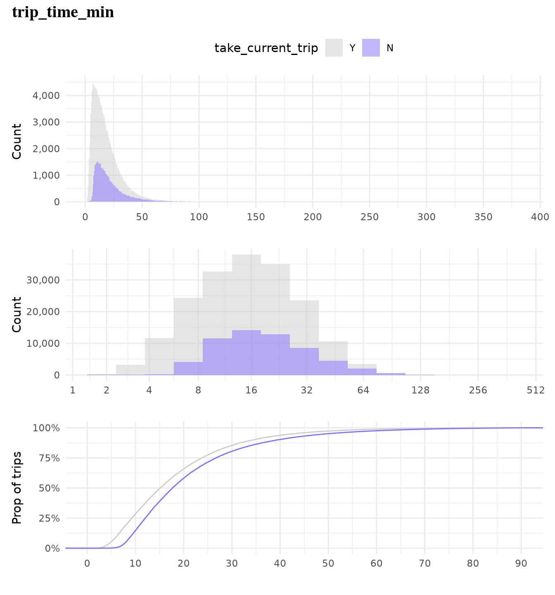

## To manage relative paths
library(here)
## Publish data sets, models, and other R objects
library(pins)
library(qs2)
## To transform data that fits in RAM
library(data.table)
library(lubridate)
## To create plots
library(ggplot2)
library(ggiraph)
library(scales)
## Custom functions
devtools::load_all()
## Defining the print params to use in the report
options(datatable.print.nrows = 15, digits = 4)
# Defining the pin boards to use
BoardLocal <- board_folder(here("../NycTaxiPins/Board"))
# Loading params
Params <- yaml::read_yaml(here("params.yml"))Lookahead-Based Labeling for Learning an Improved ADP Policy
Generating the Supervised Target Variable take_current_trip from Historical Data
In the baseline simulation (Chapter 4) we used a myopic random policy that always accepts the first qualifying trip drawn from the candidate set \(\mathcal{C}_t^n\). That policy gave us the reference hourly wage of approximately $42.17 (95% CI from bootstrap).
To improve the policy we need a data-driven Policy Function Approximation (PFA). The first indispensable step is to create a high-quality supervised training set that approximates the optimal short-horizon decision \(x_t^*\).
For every historical trip \(i\) (treated as the current decision epoch) we:
- Reconstruct the exact state \(S_t\) used in the baseline.
- Build the identical candidate set \(\mathcal{C}_t\) that the driver would see in the next 15 minutes (same company, WAV rules, radius expansion: 1 mi → 3 mi → 5 mi → +2 mi every 2 min).
- Compare the benefit (
driver_pay + tips) of trip \(i\) against every reachable alternative \(j \in \mathcal{C}_t\). - Label the binary target
\[ \text{take\_current\_trip}_i = \begin{cases} 1 \text{ ("Y")} & \text{if trip } i \text{ is at least as good as any alternative} \\ 0 \text{ ("N")} & \text{if there exists at least one strictly better trip} \end{cases} \]
This process is lookahead-based labeling via historical simulation. It is the standard offline technique in Approximate Dynamic Programming when perfect future information is unavailable. The resulting 24 % “reject” rate is exactly what we expect under a 15-minute horizon. These labels will later be used to train any classifier \(\hat{p}_t = \Pr(\text{take\_current\_trip}=1 \mid S_t)\), turning the policy into a tunable threshold rule \(\tau\).
This guarantees that the labels are faithful to the same mathematical model we used for the baseline, so that any performance lift we later measure is real and comparable.
Loading packages and boards
Why this step is important
We load exactly the same board and custom functions used in the baseline simulation, guaranteeing reproducibility and identical data structures (zones, distances, WAV flags, etc.).
Adding take_current_trip to the sample
Purpose and ADP link
The new variable take_current_trip is the supervised label that approximates the optimal decision \(x_t^*\) under the same sequential-decision framework defined in Chapter 4. It tells the future PFA model: “Given the current state, should the driver accept this trip or keep searching?”
Assumptions (identical to baseline)
For a future trip to be considered a valid alternative it must satisfy exactly the constraints used in the baseline simulation:
- Same taxi company (
hvfhs_license_num). - WAV compatibility (
wav_match_flag). - Request time window: 3 seconds (rejection delay) to 15 minutes after the original request.
- Distance from current zone follows the same radius-expansion policy:
- 0–1 min → 1 mile
- 1–3 min → 3 miles
- 3–5 min → 5 miles
- +2 miles every additional 2 minutes.
- 0–1 min → 1 mile
This ensure the training labels are generated under the identical uncertainty model \(\mathcal{C}_t^n\) and transition function \(S^M(\cdot)\). Any deviation would make the later PFA incomparable to the baseline.
Implementation
Because the process is embarrassingly parallel and memory-intensive, we use future multicore processing. The core function add_take_current_trip() has been unit-tested (see GitHub test file) and implements the exact candidate-set logic from the baseline.
Why parallel processing matters: Running 500 k+ independent 15-minute simulations sequentially would take days. With 4 future cores + 8 data.table threads we complete the full 2023 dataset in a few hours without hitting swap memory.
Tuning the parallel configuration
Before scaling to the full year we benchmarked every combination of cores, chunk size, and scheduling. The optimal settings (data.table: 8 cores, future: 4 cores, chunk.size = 200, scheduling = 0.6) were selected because they minimized wall-clock time while staying inside the 17 GB RAM limit.
Why tuning is essential
A suboptimal configuration would either waste CPU cycles or crash the process. The chosen parameters give reproducible, efficient labeling at production scale.
Rscript ~/NycTaxi/multicore-scripts/01-fine-tune-future-process.RThe below plot summaries the obtained results.
And as we can see the got better performance by using fewer cores for future, due the RAM capacity limit, when using only 4 cores and increasing the number of task per core we can see the time needed to complete the 2k samples it’s reduced as it didn’t use the SWAP memory while running the process, as we can see in the next screenshot.

And after checking this results we ended with the next configuration:
- Number of cores used by
data.table: 8 - Number of cores used by
future: 4 - Chunk.size used by
future: 200 - Scheduling used by
future: 0.6
Running the process month-by-month
We execute one month at a time via the bash script 02-run_add_target.sh to protect against interruptions and memory overflow.
Why month-by-month execution matters
It turns a high-risk, all-or-nothing job into a fault-tolerant pipeline. We can resume from any month without reprocessing prior data.
#!/bin/bash
# Check if the correct number of arguments is provided
if [ "$#" -ne 3 ]; then
echo "Usage: $0 <script_path> <start_number> <end_number>"
exit 1
fi
# Assign arguments to variables
SCRIPT_PATH=$1
START_NUM=$2
END_NUM=$3
# Loop through the given range and run the R script
for i in $(seq $START_NUM $END_NUM)
do
Rscript $SCRIPT_PATH $i
doneOnce defined the bash script we can use it by running the next command in the terminal.
bash multicore-scripts/02-run_add_target.sh multicore-scripts/02-add-target.R 1 24Here we can see that the 24 files have been saved as fst binnary files.
BoardLocal |> pin_list() |> grep(pattern = "OneMonth", value = TRUE) |> sort()
#> [1] "OneMonthData01" "OneMonthData02" "OneMonthData03" "OneMonthData04"
#> [5] "OneMonthData05" "OneMonthData06" "OneMonthData07" "OneMonthData08"
#> [9] "OneMonthData09" "OneMonthData10" "OneMonthData11" "OneMonthData12"
#> [13] "OneMonthData13" "OneMonthData14" "OneMonthData15" "OneMonthData16"
#> [17] "OneMonthData17" "OneMonthData18" "OneMonthData19" "OneMonthData20"
#> [21] "OneMonthData21" "OneMonthData22" "OneMonthData23" "OneMonthData24"Exploting created variable
Importing 2023 data
ValidZoneSample2023 <-
pin_list(BoardLocal) |>
grep(pattern = "^OneMonthData", value = TRUE) |>
sort() |>
head(12L) |>
lapply(FUN = pin_read, board = BoardLocal) |>
rbindlist()Adding geospatial and derived features
The PFA model will be trained on the same state variables that appear in \(S_t^n\) (company, WAV, zone, time-of-day, borough, service zone). Enriching now guarantees that every predictor used later is already aligned with the baseline state definition.
ZoneCodesRef <- pin_read(BoardLocal, "ZoneCodesRef")
ValidZoneSample2023[, `:=`(
company = fcase(
hvfhs_license_num == "HV0002" , "Juno" ,
hvfhs_license_num == "HV0003" , "Uber" ,
hvfhs_license_num == "HV0004" , "Via" ,
hvfhs_license_num == "HV0005" , "Lyft"
),
take_current_trip = factor(
fifelse(take_current_trip == 1, "Y", "N"),
levels = c("Y", "N")
),
weekday = wday(request_datetime, label = TRUE, abbr = FALSE, week_start = 1),
month = month(request_datetime, label = TRUE, abbr = FALSE),
hour = hour(request_datetime),
trip_time_min = trip_time / 60,
trip_value = tips + driver_pay,
PULocationID = as.character(PULocationID),
DOLocationID = as.character(DOLocationID)
)]
# To explore the distribution provided by the `PULocationID` (Pick Up Zone ID)
# and `DOLocationID` (Drop Off Zone ID), we need to add extra information.
# If we check the taxi zone look up table, we can find the `Borough` and
# `service_zone` of each table.
ValidZoneSample2023[
ZoneCodesRef,
on = c("PULocationID" = "LocationID"),
`:=`(
PULocationID = as.character(PULocationID),
PUBorough = Borough,
PUServiceZone = service_zone
)
]
ValidZoneSample2023[
ZoneCodesRef,
on = c("DOLocationID" = "LocationID"),
`:=`(
DOLocationID = as.character(DOLocationID),
DOBorough = Borough,
DOServiceZone = service_zone
)
]Distribution of the target
It shows that only 24 % of trips should be rejected under a 15-minute lookahead. This gives us an immediate sanity check that the labeling process matches the economics we observed in the baseline simulation.
Show the code
ValidZoneSample2023[, .N, by = "take_current_trip"][, `:=`(
prop = N / sum(N),
take_current_trip = reorder(take_current_trip, N)
)] |>
ggplot(aes(N, take_current_trip)) +
geom_col(fill = Params$ColorGray, color = "black", width = 0.5) +
geom_text(aes(label = percent(prop, accuracy = 1)), nudge_x = 10000) +
scale_x_continuous(labels = comma_format()) +
labs(title = "Only 24% of the trips need to be rejected", x = "") +
theme_minimal(base_family = Params$BaseFontFamily) +
theme(
panel.grid.major.y = element_blank(),
panel.grid.minor.x = element_blank(),
plot.title = element_text(face = "bold", size = 15)
)
Predictors vs take_current_trip
We restrict analysis to trips ≥ 2 minutes (as decided in the baseline) and explore only variables with ≥ 2 levels and ≥ 1 % representation.
Categorical variables
dispatching_base_num,originating_base_num, andaccess_a_ride_flagwere not included as represent the same information that thecompany.PULocationIDandDOLocationIDpresent a strong variation.wav_match_flagpresent a moderate variation.companypresent a moderate variation.weekdaypresent low variation.monthpresent a moderate variation.hourpresent a strong variation.PUBoroughpresent a strong variation.PUServiceZonepresent a strong variation.DOBoroughpresent a strong variation.DOServiceZonepresent a strong variation.
Numerical variables
trip_milesalone is not highly effective in predicting whether a trip will be taken as but classes present overlapping distributions and similar cumulative distributions, which make it a low predictor.trip_time_minalone is not highly effective in predicting whether a trip will be taken as both classes present overlapping distributions and similar cumulative distributions, which make it a low predictor.
Show the code
TrainingSampleValidCat <-
ValidZoneSample2023[
trip_time_min >= 2,
c(.SD, list("trip_id" = trip_id)) |> lapply(as.character),
.SDcols = \(x) is.character(x) | is.factor(x) | is.integer(x)
][,
melt(.SD, id.vars = c("trip_id", "take_current_trip")),
.SDcols = !c(
"hvfhs_license_num",
"dispatching_base_num",
"originating_base_num",
"access_a_ride_flag"
)
][, value_count := .N, by = c("variable", "value")][,
value_prop := value_count / .N,
by = "variable"
][value_prop >= 0.01][, n_unique_values := uniqueN(value), by = "variable"][
n_unique_values > 1L
]
ggplot(
TrainingSampleValidCat,
aes(value, fill = factor(take_current_trip, levels = c("Y", "N")))
) +
geom_bar(width = 0.7, position = "fill") +
scale_fill_manual(
values = c("N" = Params$ColorHighlight, "Y" = Params$ColorGray)
) +
scale_y_continuous(labels = percent_format(accuracy = 1)) +
facet_wrap(vars(variable), scale = "free", ncol = 3) +
coord_flip() +
labs(y = "Prop of trips", fill = "take_current_trip") +
theme_minimal(base_family = Params$BaseFontFamily) +
theme(legend.position = "top", panel.grid = element_blank())
Show the code
plot_num_distribution(
ValidZoneSample2023[trip_time_min >= 2],
trip_miles,
title = "trip_miles",
take_current_trip,
manual_fill_values = c("N" = Params$ColorHighlight, "Y" = Params$ColorGray),
hist_binwidth = 5,
hist_n_break = 12,
log_binwidth = 0.5,
curve_limits = c(0, 25),
curve_breaks_x = breaks_width(3)
)
#> Warning: Removed 489 rows containing non-finite outside the scale range
#> (`stat_ecdf()`).
Show the code
plot_num_distribution(
ValidZoneSample2023[trip_time_min >= 2],
trip_time_min,
take_current_trip,
manual_fill_values = c("N" = Params$ColorHighlight, "Y" = Params$ColorGray),
title = "trip_time_min",
hist_binwidth = 5,
hist_n_break = 12,
log_binwidth = 0.5,
curve_breaks_x = scales::breaks_width(10),
curve_limits = c(0, 90)
)
#> Warning: Removed 460 rows containing non-finite outside the scale range
#> (`stat_ecdf()`).
Why the predictor analysis matters
It tells us which features carry signal for the PFA classifier. Strong variation in hour, borough, service zone, and location IDs confirms that the state variables we used in the baseline simulation are indeed predictive of the optimal decision. Weak predictors (trip_miles and trip_time alone) will be combined with others in the full model.
Forward link to the next chapter
We now possess a clean, large-scale, labeled dataset whose labels were generated under the exact same mathematical model used for the baseline hourly wage. In the next chapter we will train a classifier on these labels, convert its probability output into a tunable threshold policy \(\pi^\tau\), and re-run the same full-day empirical simulation (Monte-Carlo averaging over many trajectories sampled directly from the historical data) from Chapter 4. The resulting hourly wage (and its confidence interval) will be directly comparable to the myopic baseline, giving us a quantifiable improvement from the Policy Function Approximation.
This completes the critical data-preparation stage of the ADP pipeline.